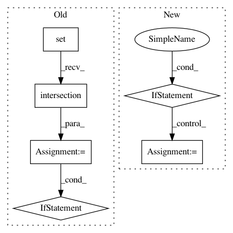

bf72974b7eb2229b6f4f4d7ae6b654693785d71f,brian2/core/magic.py,MagicNetwork,_update_magic_objects,#MagicNetwork#Any#,168
Before Change
def _update_magic_objects(self, level):
objects = collect(level+1)
contained_objects = set()
valid_refs = set()
for obj in objects:
if obj.invalidates_magic_network:
valid_refs.add(weakref.ref(obj))
for contained in _get_contained_objects(obj):
contained_objects.add(contained)
// check whether we should restart time, continue time, or raise an
// error
inter = valid_refs.intersection(self._previous_refs)
if len(inter) == 0:
// reset time
self.t_ = 0.0
elif len(self._previous_refs) == len(valid_refs):
// continue time
pass
else:
raise MagicError(
"Brian cannot guess what you intend to do here, see docs for MagicNetwork for details")
self._previous_refs = valid_refs
self.objects[:] = objects | contained_objects
logger.info("Updated MagicNetwork to include {numobjs} objects "
After Change
some_known = False
some_new = False
for obj in objects:
if obj._network == self.id:
some_known = True // we are continuing a previous run
elif obj._network is None and obj.invalidates_magic_network:
some_new = True
// Note that the inclusion of objects that have been run as part of
// other objects will lead to an error in `Network.before_run`, we
// do not have to deal with this case here.
if some_known and some_new:
raise MagicError(("The magic network contains a mix of objects "
"that has been run before and new objects, Brian "
"does not know whether you want to start a new "
In pattern: SUPERPATTERN
Frequency: 3
Non-data size: 6
Instances
Project Name: brian-team/brian2
Commit Name: bf72974b7eb2229b6f4f4d7ae6b654693785d71f
Time: 2014-09-19
Author: marcel.stimberg@ens.fr
File Name: brian2/core/magic.py
Class Name: MagicNetwork
Method Name: _update_magic_objects
Project Name: PyMVPA/PyMVPA
Commit Name: 2bf8934c85501fec5bdc028e3926f3a2999be99d
Time: 2014-02-27
Author: debian@onerussian.com
File Name: mvpa2/cmdline/cmd_searchlight.py
Class Name:
Method Name: run
Project Name: IDSIA/sacred
Commit Name: 17178a3849dea9c5b1f2b4d589c894a92c5d3726
Time: 2014-07-14
Author: klaus@idsia.ch
File Name: sacred/custom_containers.py
Class Name: DogmaticDict
Method Name: __init__